phren for iPhone
Your agents.
In your pocket.
Chat and talk with the coding agents running on your own computers. Approve what they ask, send them work and see what they remember. The phone connects straight to your computers over SSH, with no phren server in between.
In TestFlight testing · iOS 17 or later · free
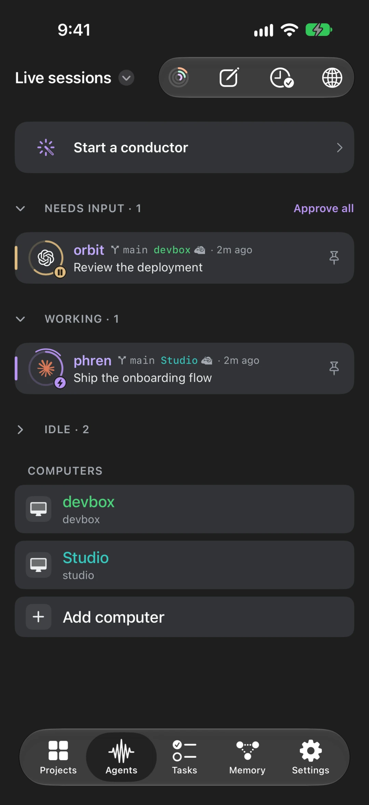
Agents
Every session, on every computer.
Pair your computers once. Agents lists the live sessions on each of them, sorted by what needs you first: waiting on you, working, then idle. You see at a glance which agent is stuck and which one is done.
- Start an agent in any project folder on any computer, in a new worktree if you like.
- Account usage for Claude, Codex, Copilot and OpenCode, with each limit and when it resets.
- Pin the sessions you care about and fold the rest away.
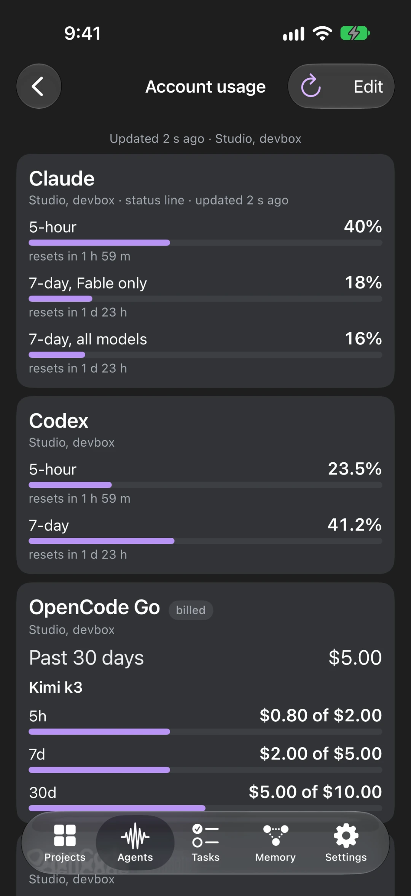
Chat
A real conversation with each agent.
Open a session and pick up where the agent is. Replies stream in as it writes them. Commands, file edits and diffs arrive as cards you can open, so you can follow the work, not just the summary.
- Send messages, photos and files, or open the session’s terminal when you need it.
- File paths are links. Tap one to read the file with syntax colors and line numbers.
- One settings sheet for the model, its effort and, for Claude Code, the permission mode.
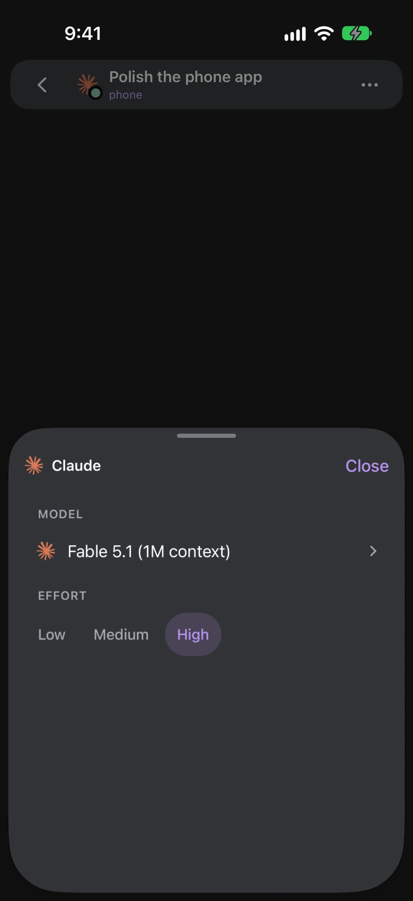
Talk mode
Talk to your agents. Hear them back.
Talk mode is a hands-free conversation. Speak, and your words are sent when you pause. The reply is read back to you, with each word lit up as it plays.
- Steer while it works. Keep talking during a turn and the agent hears you.
- Phone in your pocket. Talk keeps going with the phone locked and on AirPods.
- Leave the chat and keep talking. A small pill holds the conversation while you look at something else.
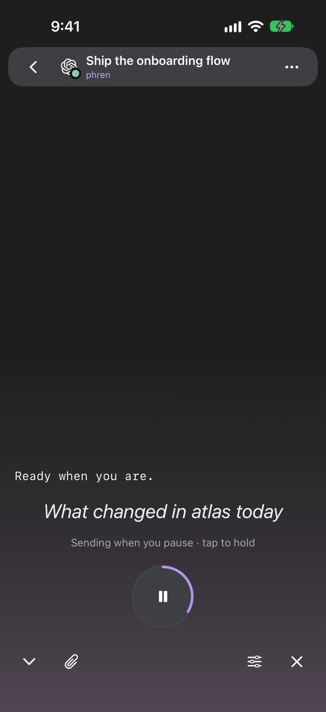
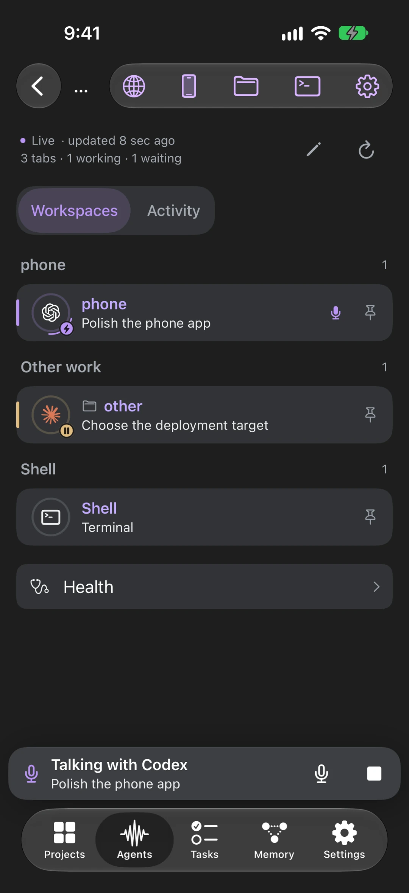
Approvals
Approve from anywhere.
When an agent asks for permission, it waits for you, not for you to get back to your desk. Answer in the chat, from a notification, or from the Live Activity on the Lock Screen.
- Face ID first. Answers from the Lock Screen need Face ID or your passcode.
- Approve all answers every waiting request at once.
- Approval rules pick commands that always ask or are always denied, per project or agent.
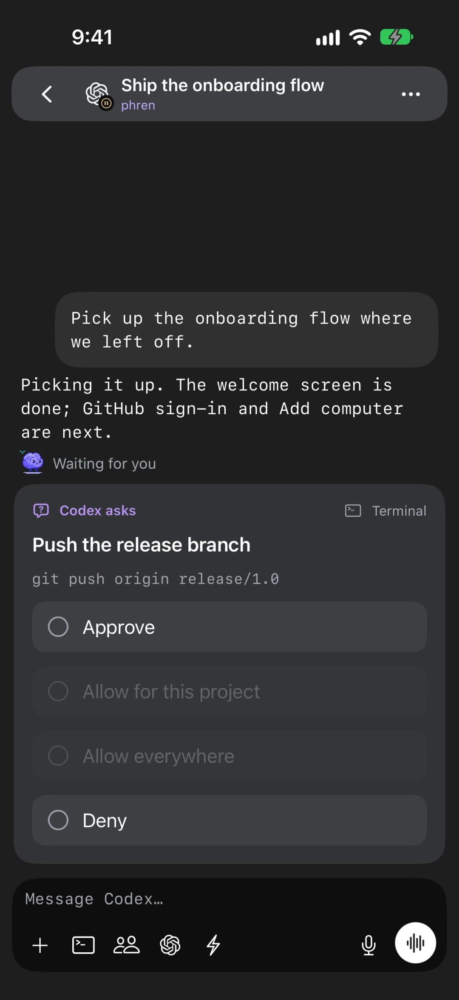
Conductor
One conductor for all your computers.
Tell a conductor what you want done. It sees the live sessions on every linked computer, hands work to one of them or starts a new worker, and tells you when a worker finishes, needs you or stops.
- Every hand-off is a card you can open: who got the work, where, and how it went.
- “Talk to my conductor” from Siri, the Action button or Control Center.
- Computers shows each machine’s load, memory and disk, so you know which one has room.
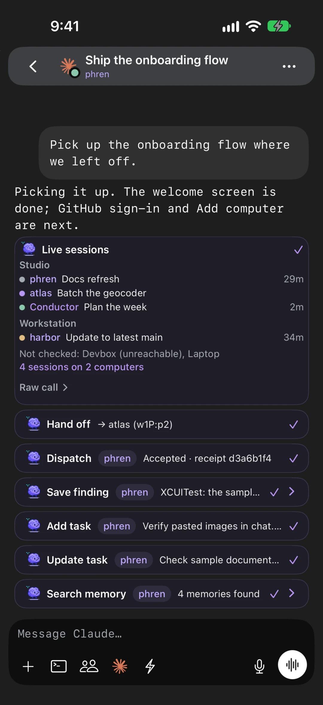
The rest of the work
Review it, schedule it, remember it.
The things you would walk back to your desk for, on the phone.
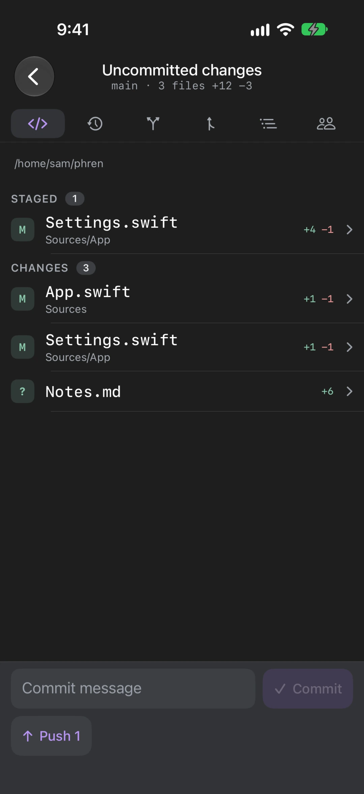
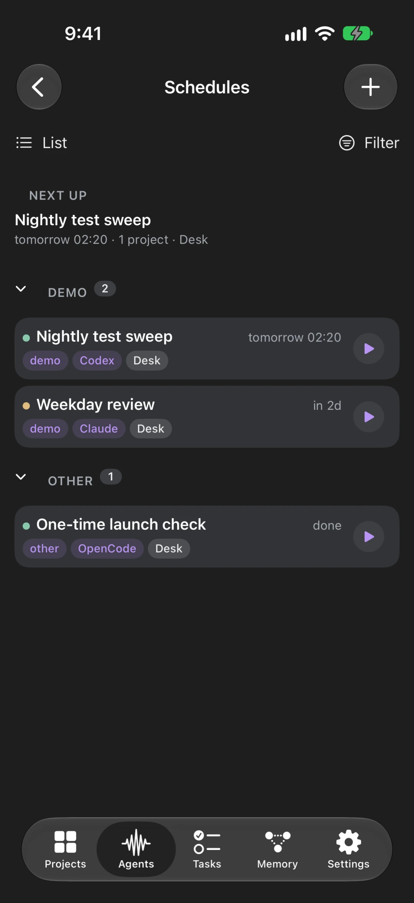
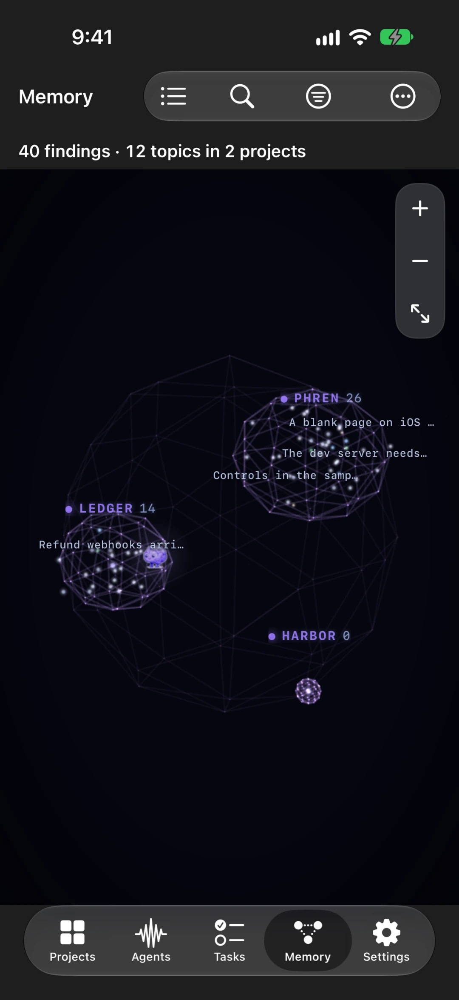
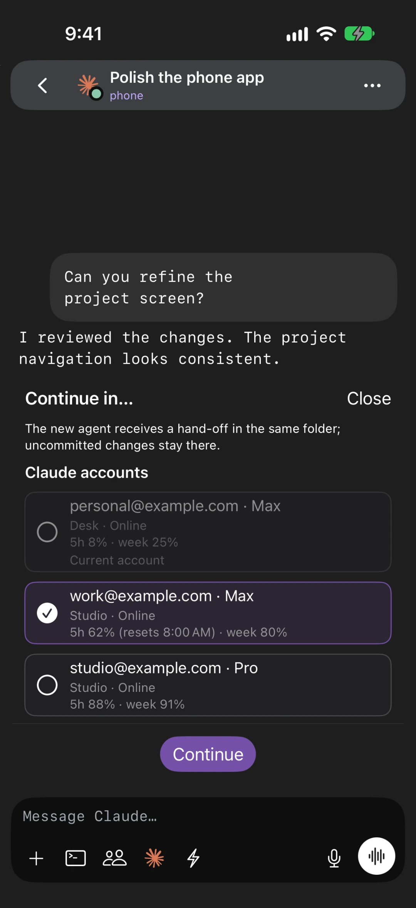
Built for iPhone
It works where the phone works.
Live Activities
One activity for all your agents on the Lock Screen and in the Dynamic Island, with Deny and Approve when one asks.
Siri and Shortcuts
“Add a phren task” works from a locked phone. Add Task and Add Note can sit on the Action button.
Widgets
Your agents, top task, memory and usage on the Home Screen and the Lock Screen.
Controls
Talk to Conductor and Pause All Agents, from Control Center and the Lock Screen.
Terminal
Open the exact pane an agent runs in, with a key bar, shortcut panels, pinch to resize and image uploads.
On-device summaries
On iPhones with Apple Intelligence, long replies are summarized on the phone before they are read aloud.
How it works
Your phone, your computers, your agents.
The agents keep running where they are, with your files and your accounts. The phone reaches them through a small helper on each computer.
Your iPhone
Pairs with a computer by scanning a code. Keeps one SSH key per computer, made on the phone.
Phren Hook
A small open-source helper on each computer. It finds the sessions running in Herdr or tmux and carries your messages, approvals and keystrokes to them.
- macOS
- Linux
- Tailscale when away
Your agents
Run as they always do, in your terminal, signed in to your own accounts. Their memory lives in a phren store you own.
- Claude Code
- Codex
- Copilot
- OpenCode
- Phren
One command on each computer installs Phren Hook and shows the code to scan: npx --yes @phren/cli@latest pair. The setup guide walks through it.
Privacy and security
Nothing in between.
There is no phren server for your sessions to pass through, because there isn’t one. The phone talks to your computers, and to GitHub if you sync your memory there. We receive nothing.
Read the privacy policy, item by itemStraight to your computers
Every connection is SSH to a computer you paired, checked against its pinned host key. No public port, relay or Funnel.
Keys stay on the phone
Each SSH key is made on the phone and kept in its Keychain, on this device only. Only the public half goes to your computer. Never in backups.
A key that can do one thing
Your computer adds the phone’s key with SSH’s restrict option, so it can only talk to Phren Hook. Remove one line to revoke it.
No analytics
No analytics, no crash reports, no telemetry. Phren Hook and the CLI are open source, so you can read what runs on your computers.
Get the app
Try it with your own agents.
phren for iPhone is in testing through Apple’s TestFlight, and we are preparing the App Store release. Ask for an invite, install TestFlight, then pair your first computer.
Screenshots show sample projects and sample computers. Also on Android.